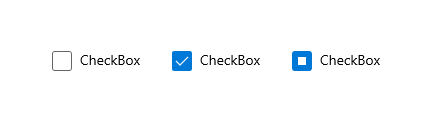
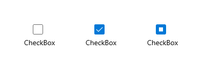

Control templates
You can customize a control's visual structure and visual behavior by creating a control template in the XAML framework. Controls have many properties, such as Background, Foreground, and FontFamily, that you can set to specify different aspects of the control's appearance. But the changes that you can make by setting these properties are limited. You can specify additional customizations by creating a template using the ControlTemplate class. Here, we show you how to create a ControlTemplate to customize the appearance of a CheckBox control.
Important APIs: ControlTemplate class, Control.Template property
Custom control template example
By default, a CheckBox control puts its content (the string or object next to the CheckBox) to the right of the selection box, and a check mark indicates that a user selected the CheckBox. These characteristics represent the visual structure and visual behavior of the CheckBox.
Here's a CheckBox using the default ControlTemplate shown in the Unchecked, Checked, and Indeterminate states.

You can change these characteristics by creating a ControlTemplate for the CheckBox. For example, if you want the content of the check box to be below the selection box, and you want to use an X to indicate that a user selected the check box. You specify these characteristics in the ControlTemplate of the CheckBox.
To use a custom template with a control, assign the ControlTemplate to the Template property of the control. Here's a CheckBox using a ControlTemplate called CheckBoxTemplate1. We show the Extensible Application Markup Language (XAML) for the ControlTemplate in the next section.
<CheckBox Content="CheckBox" Template="{StaticResource CheckBoxTemplate1}" IsThreeState="True" Margin="20"/>
Here's how this CheckBox looks in the Unchecked, Checked, and Indeterminate states after we apply our template.

Specify the visual structure of a control
When you create a ControlTemplate, you combine FrameworkElement objects to build a single control. A ControlTemplate must have only one FrameworkElement as its root element. The root element usually contains other FrameworkElement objects. The combination of objects makes up the control's visual structure.
This XAML creates a ControlTemplate for a CheckBox that specifies that the content of the control is below the selection box. The root element is a Border. The example specifies a Path to create an X that indicates that a user selected the CheckBox, and an Ellipse that indicates an indeterminate state. Note that the Opacity is set to 0 on the Path and the Ellipse so that by default, neither appear.
A TemplateBinding is a special binding that links the value of a property in a control template to the value of some other exposed property on the templated control. TemplateBinding can only be used within a ControlTemplate definition in XAML. See TemplateBinding markup extension for more info.
Note
Starting with Windows 10, version 1809 (SDK 17763), you can use x:Bind markup extensions in places you use TemplateBinding. See TemplateBinding markup extension for more info.
<ControlTemplate x:Key="CheckBoxTemplate1" TargetType="CheckBox">
<Border BorderBrush="{TemplateBinding BorderBrush}"
BorderThickness="{TemplateBinding BorderThickness}"
Background="{TemplateBinding Background}">
<Grid>
<Grid.RowDefinitions>
<RowDefinition Height="*"/>
<RowDefinition Height="25"/>
</Grid.RowDefinitions>
<Rectangle x:Name="NormalRectangle" Fill="Transparent" Height="20" Width="20"
Stroke="{ThemeResource SystemControlForegroundBaseMediumHighBrush}"
StrokeThickness="{ThemeResource CheckBoxBorderThemeThickness}"
UseLayoutRounding="False"/>
<!-- Create an X to indicate that the CheckBox is selected. -->
<Path x:Name="CheckGlyph"
Data="M103,240 L111,240 119,248 127,240 135,240 123,252 135,264 127,264 119,257 111,264 103,264 114,252 z"
Fill="{ThemeResource CheckBoxForegroundThemeBrush}"
FlowDirection="LeftToRight"
Height="14" Width="16" Opacity="0" Stretch="Fill"/>
<Ellipse x:Name="IndeterminateGlyph"
Fill="{ThemeResource CheckBoxForegroundThemeBrush}"
Height="8" Width="8" Opacity="0" UseLayoutRounding="False" />
<ContentPresenter x:Name="ContentPresenter"
ContentTemplate="{TemplateBinding ContentTemplate}"
Content="{TemplateBinding Content}"
Margin="{TemplateBinding Padding}" Grid.Row="1"
HorizontalAlignment="Center"
VerticalAlignment="{TemplateBinding VerticalContentAlignment}"/>
</Grid>
</Border>
</ControlTemplate>
Specify the visual behavior of a control
A visual behavior specifies the appearance of a control when it is in a certain state. The CheckBox control has 3 check states: Checked, Unchecked, and Indeterminate. The value of the IsChecked property determines the state of the CheckBox, and its state determines what appears in the box.
This table lists the possible values of IsChecked, the corresponding states of the CheckBox, and the appearance of the CheckBox.
| IsChecked value | CheckBox state | CheckBox appearance |
|---|---|---|
| true | Checked |
Contains an "X". |
| false | Unchecked |
Empty. |
| null | Indeterminate |
Contains a circle. |
You specify the appearance of a control when it is in a certain state by using VisualState objects. A VisualState contains a Setter or Storyboard that changes the appearance of the elements in the ControlTemplate. When the control enters the state that the VisualState.Name property specifies, the property changes in the Setter or Storyboard are applied. When the control exits the state, the changes are removed. You add VisualState objects to VisualStateGroup objects. You add VisualStateGroup objects to the VisualStateManager.VisualStateGroups attached property, which you set on the root FrameworkElement of the ControlTemplate.
This XAML shows the VisualState objects for the Checked, Unchecked, and Indeterminate states. The example sets the VisualStateManager.VisualStateGroups attached property on the Border, which is the root element of the ControlTemplate. The Checked VisualState specifies that the Opacity of the Path named CheckGlyph (which we show in the previous example) is 1. The Indeterminate VisualState specifies that the Opacity of the Ellipse named IndeterminateGlyph is 1. The Unchecked VisualState has no Setter or Storyboard, so the CheckBox returns to its default appearance.
<ControlTemplate x:Key="CheckBoxTemplate1" TargetType="CheckBox">
<Border BorderBrush="{TemplateBinding BorderBrush}"
BorderThickness="{TemplateBinding BorderThickness}"
Background="{TemplateBinding Background}">
<VisualStateManager.VisualStateGroups>
<VisualStateGroup x:Name="CheckStates">
<VisualState x:Name="Checked">
<VisualState.Setters>
<Setter Target="CheckGlyph.Opacity" Value="1"/>
</VisualState.Setters>
<!-- This Storyboard is equivalent to the Setter. -->
<!--<Storyboard>
<DoubleAnimation Duration="0" To="1"
Storyboard.TargetName="CheckGlyph" Storyboard.TargetProperty="Opacity"/>
</Storyboard>-->
</VisualState>
<VisualState x:Name="Unchecked"/>
<VisualState x:Name="Indeterminate">
<VisualState.Setters>
<Setter Target="IndeterminateGlyph.Opacity" Value="1"/>
</VisualState.Setters>
<!-- This Storyboard is equivalent to the Setter. -->
<!--<Storyboard>
<DoubleAnimation Duration="0" To="1"
Storyboard.TargetName="IndeterminateGlyph" Storyboard.TargetProperty="Opacity"/>
</Storyboard>-->
</VisualState>
</VisualStateGroup>
</VisualStateManager.VisualStateGroups>
<Grid>
<Grid.RowDefinitions>
<RowDefinition Height="*"/>
<RowDefinition Height="25"/>
</Grid.RowDefinitions>
<Rectangle x:Name="NormalRectangle" Fill="Transparent" Height="20" Width="20"
Stroke="{ThemeResource SystemControlForegroundBaseMediumHighBrush}"
StrokeThickness="{ThemeResource CheckBoxBorderThemeThickness}"
UseLayoutRounding="False"/>
<!-- Create an X to indicate that the CheckBox is selected. -->
<Path x:Name="CheckGlyph"
Data="M103,240 L111,240 119,248 127,240 135,240 123,252 135,264 127,264 119,257 111,264 103,264 114,252 z"
Fill="{ThemeResource CheckBoxForegroundThemeBrush}"
FlowDirection="LeftToRight"
Height="14" Width="16" Opacity="0" Stretch="Fill"/>
<Ellipse x:Name="IndeterminateGlyph"
Fill="{ThemeResource CheckBoxForegroundThemeBrush}"
Height="8" Width="8" Opacity="0" UseLayoutRounding="False" />
<ContentPresenter x:Name="ContentPresenter"
ContentTemplate="{TemplateBinding ContentTemplate}"
Content="{TemplateBinding Content}"
Margin="{TemplateBinding Padding}" Grid.Row="1"
HorizontalAlignment="Center"
VerticalAlignment="{TemplateBinding VerticalContentAlignment}"/>
</Grid>
</Border>
</ControlTemplate>
To better understand how VisualState objects work, consider what happens when the CheckBox goes from the Unchecked state to the Checked state, then to the Indeterminate state, and then back to the Unchecked state. Here are the transitions.
| State transition | What happens | CheckBox appearance when the transition completes |
|---|---|---|
From Unchecked to Checked. |
The Setter value of the Checked VisualState is applied, so the Opacity of CheckGlyph is 1. |
An X is displayed. |
From Checked to Indeterminate. |
The Setter value of the Indeterminate VisualState is applied, so the Opacity of IndeterminateGlyph is 1. The Setter value of the Checked VisualState is removed, so the Opacity of CheckGlyph is 0. |
A circle is displayed. |
From Indeterminate to Unchecked. |
The Setter value of the Indeterminate VisualState is removed, so the Opacity of IndeterminateGlyph is 0. |
Nothing is displayed. |
For more info about how to create visual states for controls, and in particular how to use the Storyboard class and the animation types, see Storyboarded animations for visual states.
Use tools to work with themes easily
A fast way to apply themes to your controls is to right-click on a control on the Microsoft Visual Studio Document Outline and select Edit Theme or Edit Style (depending on the control you are right-clicking on). You can then apply an existing theme by selecting Apply Resource or define a new one by selecting Create Empty.
Controls and accessibility
When you create a new template for a control, in addition to possibly changing the control's behavior and visual appearance, you might also be changing how the control represents itself to accessibility frameworks. The Windows app supports the Microsoft UI Automation framework for accessibility. All of the default controls and their templates have support for common UI Automation control types and patterns that are appropriate for the control's purpose and function. These control types and patterns are interpreted by UI Automation clients such as assistive technologies, and this enables a control to be accessible as a part of a larger accessible app UI.
To separate the basic control logic and also to satisfy some of the architectural requirements of UI Automation, control classes include their accessibility support in a separate class, an automation peer. The automation peers sometimes have interactions with the control templates because the peers expect certain named parts to exist in the templates, so that functionality such as enabling assistive technologies to invoke actions of buttons is possible.
When you create a completely new custom control, you sometimes also will want to create a new automation peer to go along with it. For more info, see Custom automation peers.
Learn more about a control's default template
The topics that document the styles and templates for XAML controls show you excerpts of the same starting XAML you'd see if you used the Edit Theme or Edit Style techniques explained previously. Each topic lists the names of the visual states, the theme resources used, and the full XAML for the style that contains the template. The topics can be useful guidance if you've already started modifying a template and want to see what the original template looked like, or to verify that your new template has all of the required named visual states.
Theme resources in control templates
For some of the attributes in the XAML examples, you may have noticed resource references that use the {ThemeResource} markup extension. This is a technique that enables a single control template to use resources that can be different values depending on which theme is currently active. This is particularly important for brushes and colors, because the main purpose of the themes is to enable users to choose whether they want a dark, light, or high contrast theme applied to the system overall. Apps that use the XAML resource system can use a resource set that's appropriate for that theme, so that the theme choices in an app's UI are reflective of the user's systemwide theme choice.